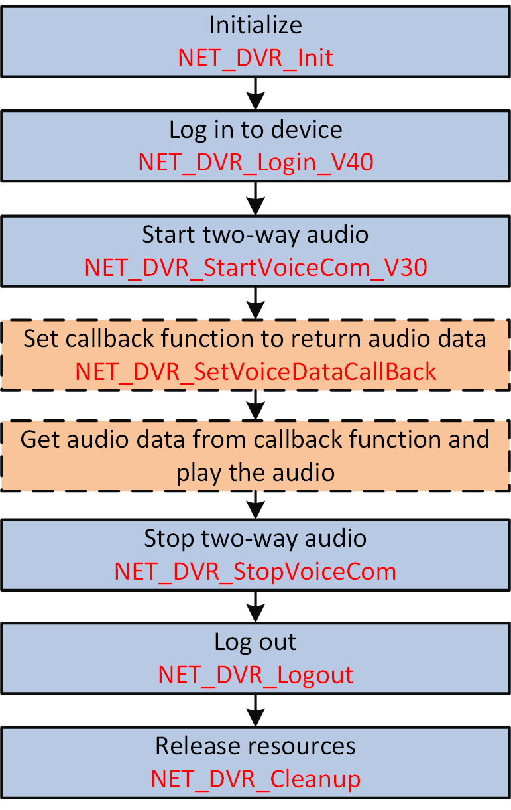

The two-way audio implements the function of audio sending or receiving between monitoring center and specific cameras. It is applied to the following situation: when there are multiple entrances and exits in a park or campus, and the booth of each entrance and exit has mounted with cameras, if the exception occurs in an entrance and exit, the monitoring center can talk with the corresponding booth to ask for information via the two-way audio.
Make sure you have called NET_DVR_Init to initialize the development environment.
Make sure you have called NET_DVR_Login_V40 to log in to the device.

Figure 1 Programming Flow of Starting Two-Way Audio#include <stdio.h>
#include <iostream>
#include "Windows.h"
#include "HCNetSDK.h"
using namespace std;
void CALLBACK fVoiceDataCallBack(LONG lVoiceComHandle, char *pRecvDataBuffer, DWORD dwBufSize, BYTE byAudioFlag, void* pUser)
{
printf("receive voice data, %d\n", dwBufSize);
}
void main() {
//---------------------------------------
// Initialize
NET_DVR_Init();
//Set connection time and reconnection time
NET_DVR_SetConnectTime(2000, 1);
NET_DVR_SetReconnect(10000, true);
//---------------------------------------
// Log in to device
LONG lUserID;
//Login parameters, including device IP address, user name, password, and so on.
NET_DVR_USER_LOGIN_INFO struLoginInfo = {0};
struLoginInfo.bUseAsynLogin = 0; //Synchronous login mode
strcpy(struLoginInfo.sDeviceAddress, "192.0.0.64"); //IP address
struLoginInfo.wPort = 8000; //Service port
strcpy(struLoginInfo.sUserName, "admin"); //User name
strcpy(struLoginInfo.sPassword, "abcd1234"); //Password
//Device information, output parameters
NET_DVR_DEVICEINFO_V40 struDeviceInfoV40 = {0};
lUserID = NET_DVR_Login_V40(&struLoginInfo, &struDeviceInfoV40);
if (lUserID < 0)
{
printf("Login failed, error code: %d\n", NET_DVR_GetLastError());
NET_DVR_Cleanup();
return;
}
//Start two-way audio
LONG lVoiceHanle;
lVoiceHanle = NET_DVR_StartVoiceCom_V30(lUserID, 1,0, fVoiceDataCallBack, NULL);
if (lVoiceHanle < 0)
{
printf("NET_DVR_StartVoiceCom_V30 error, %d!\n", NET_DVR_GetLastError());
NET_DVR_Logout(lUserID);
NET_DVR_Cleanup();
return;
}
Sleep(5000); //millisecond
//Stop two-way audio
if (!NET_DVR_StopVoiceCom(lVoiceHanle))
{
printf("NET_DVR_StopVoiceCom error, %d!\n", NET_DVR_GetLastError());
NET_DVR_Logout(lUserID);
NET_DVR_Cleanup();
return;
}
//Log out
NET_DVR_Logout(lUserID);
//Release SDK resource
NET_DVR_Cleanup();
return;
}
Call NET_DVR_Logout and NET_DVR_Cleanup to log out and release resources.